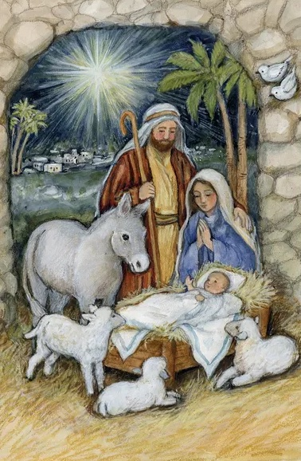

Christian Festivals


Rooted in more than 2,000 years of ritual and rite, Easter commemorates the central
event in the Christian church: the resurrection of Jesus Christ, which Christians see as
fulfilling the biblical prophecy of a messiah who would rise from the dead and give eternal
life in heaven to those who believe in him.